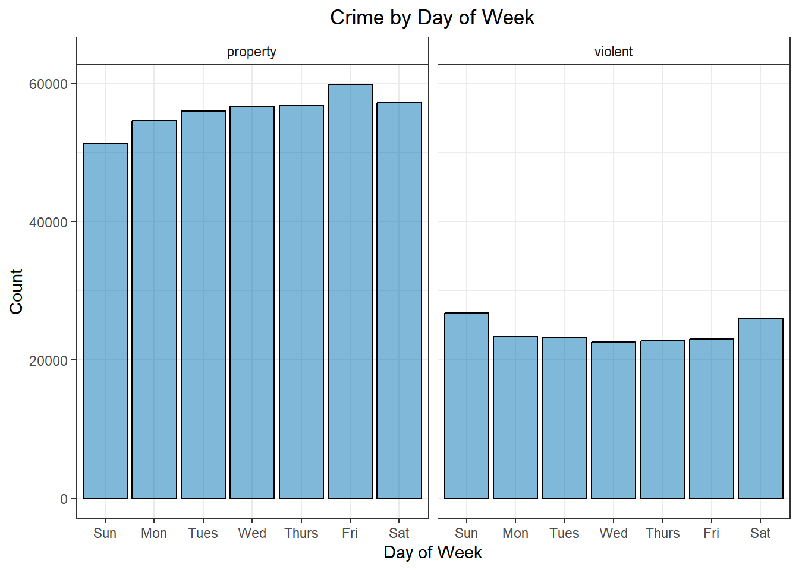
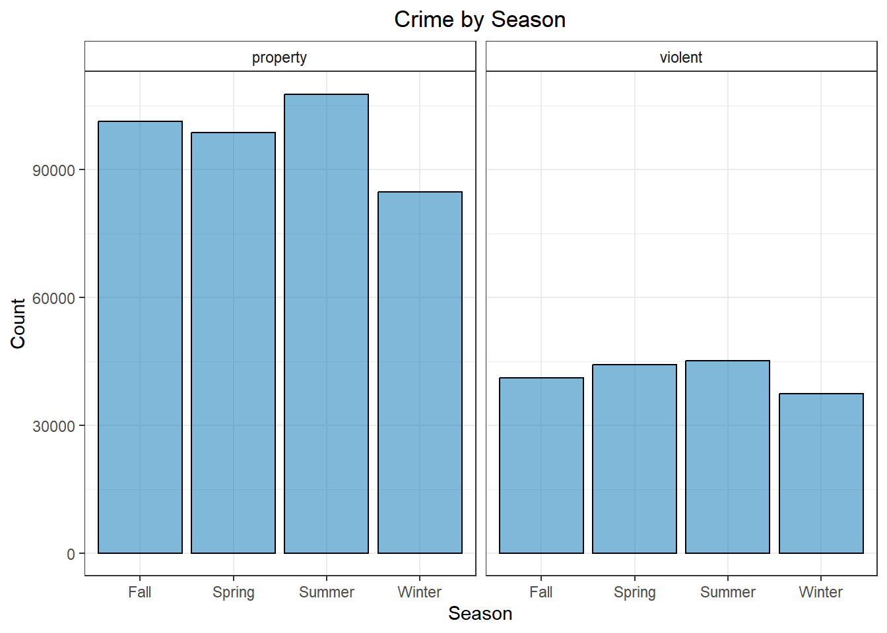
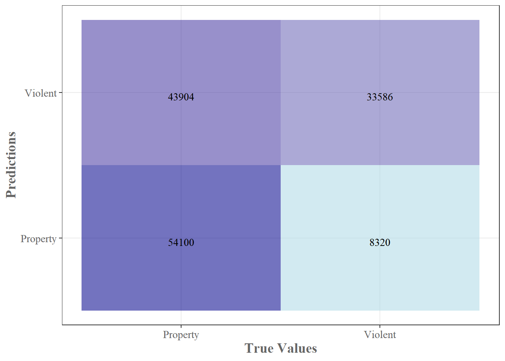

If you’ve been following this blog, you’ll recognize that I’ve been pretty obsessed with crime data recently. Louisville’s open crime data has been a great open source, continuously updating data set that has allowed me to explore new plotting techniques, interesting time series analysis and more. Today, I’m exploring the feasibility of classifying crimes by their crime type using this data set. Why you might ask? Well, as per usual, mainly because it’s fun, but this sort of model could easily see use in the real world. A successful model will give me insight into what features have predictive power for certain crimes. This information can be used to allocate manpower, for departmental budgeting and a whole host of other things. In developing this model, I’ve bumped–yet again– into a fundamental truth in data science – your data is the most valuable asset you have. Sometimes, your model just needs better data(or better feature engineering) and without it, even the most sophisticated model in the world won’t give you satisfactory results. With that said, let’s dive into the analysis.
Preparing the data
First things first, I need to massage my data a bit. The original data is a little over a million rows and has 25 variables. Many of those are redundant(month and month_reported) or uninformative(yday) for my purposes, so I just eliminate those right away. Next, I have to decide how fine grained my predictions should be. I have 16 different crime types. That’s not an unworkable number of classes to predict with something like multinomial logistic regression, but just going by gut initial feeling, I don’t think I’ll get very good accuracy. From my past analysis, I know that this data set is very unbalanced.
Var1
Freq
arson
0.000
assault
0.134
burglary
0.092
disturbing the peace
0.013
drugs/alcohol violations
0.172
dui
0.001
fraud
0.035
homicide
0.001
motor vehicle theft
0.040
other
0.128
robbery
0.022
sex crimes
0.008
theft/larceny
0.178
vandalism
0.086
vehicle break-in/theft
0.078
weapons
0.011
As you can see above, crimes such as theft and drug/alcohol violations make up 17% of the total number of crimes each, while arson is barely represented in the data. This means predicting something like arson will be extremely difficult without some very informative variables. Additionally, do I really care about all the crime distinctions. While vehicle break-in/theft and motor vehicle theft are indeed different, ultimately they are both thefts. Thankfully, the UCR(Uniform Crime Reports) provides some guidance for this sort of aggregation. There are two parts to the UCR, part 1 and part 2. Part 1 consists violent crimes and property crimes and part 2 is mainly “lesser” offenses such as vandalism, but also includes offenses such as sex crimes and fraud. The UCR can be used to (somewhat) rigorously divide the various crime types, but, ultimately, what sort of granularity to use is a modeling decision. It seems reasonable that violent crimes may share characteristics that could lead to performant models. This also seems true for something like property crimes. Part 2 of the UCR is a different bag of worms. It contains such a diverse range of crimes. Fraud doesn’t appear to have much in common with DUI’s or prostitution. The entirety of part 2 is really just a mixed bag of offenses. After a good bit of test modeling, it didn’t seem possible to classify part 2 crimes reliably in some sort of ‘other’ category. The characteristics of the crimes were just too varied. In the end, I decided to simply predict whether a crime was a property crime or a violent crime. It may not be the ideal choice, but all modeling requires tough choices and finesse.
With that decision out of the way, I can label my data and cut out any remaining uninformative variables. The head of the resulting data set can be seen below.
Table continues below
premise_type
zip_code
year
month
hour
day_of_week
highway / road / alley
40210
2005
May
16
Sunday
parking lot / garage
40205
2009
Feb
12
Saturday
bar / night club
40202
2005
Jan
23
Saturday
residence / home
40229
2005
Jan
10
Sunday
grocery / supermarket
40229
2005
Jan
1
Saturday
residence / home
40215
2005
Jan
9
Sunday
weekday
season
lmpd_beat
lat
lng
crime
Weekend
Spring
223
38.24
-85.79
property
Weekend
Winter
513
38.23
-85.7
property
Weekend
Winter
134
38.26
-85.75
property
Weekend
Winter
724
38.12
-85.65
violent
Weekend
Winter
724
38.09
-85.67
property
Weekend
Winter
436
38.18
-85.78
property
Looking at some quick, exploratory plots, it’s pretty easy to see that there are small, but noticeable differences in many of variables. We tend to see more violent crime on the weekend than on weekdays. With property crime, this is reversed. Similarly, there are more violent crimes in spring/summer than in fall/winter, but for property crimes we only really notice a slight bump in summer and then a sharp drop during winter. These are the sort of things our logistic regression model should pick up on to fit the model.

Crime by Day of Week

Crime by Season
Making the Model
With the data prepared, now I can flex the full power of R. First, I create a training and a testing split with the data. I’m just using a 75/25 split, though this can easily be adjusted depending on the computing power you have at your disposal. With the data split, now I need to see how well represented each class is in my data set.
Var1
Freq
property
0.7
violent
0.3
As you can see above, the data set is quite unbalanced. Louisville sees 2.3 times as many property crimes as violent crimes. In my test modeling, leaving the data this imbalanced significantly reduced the accuracy of the model. To address unbalanced data, you typically either upsample or downsample the data. With upsampling you are effectively making random copies of the smaller class until the classes are even. With downsampling you are removing data from the larger class until they are even. While, in general, it’s not a good idea to throw away data, in this case the performance was very similar. Since upsampling had similar performance but much longer training times, I ended up using downsampling.
Finally, all that’s left to do is build the model. In this post, I’m building a fairly standard logistic regression model. I wanted to try out the nnet package, so I use their multinom function which fits a logistic regression model using a single layer neural network. I could just as easily have used the base glm package from R, but it was a decent bit slower in the model training–plus it is always fun to play around with a new package.
One note on cross-validation: initially, I built all of my models using the caret package. With caret, you have a world of training, testing, evaluation and validation techniques at your disposal. These initial models used repeated cross-validation from caret to fit the logistic regression model. I planned to use these more robust models in the final report, but somewhere along the pipeline the model size blew up and I was left with 100+MB model sizes. Since this is going up on github and I didn’t want to fiddle around with those model sizes I ditched the cross-validation and fit the model with the original nnet package.
Code
# Cross validation setup. I found that when I used caret to build this model, # the saved model size blew up way too quickly(100+MB models). Since this is just a# blog post and not a production model, I went back and built the model using# the multinom function directly from the nnet package.# Test set performance was similar either way.# fitControl <- trainControl(method = 'repeatedcv', number = 2)# set.seed(123)# fit1 <- train(Class ~., data = downsampled_train, method = 'multinom',# trControl = fitControl, verbose = TRUE)# Model takes a couple minutes to train, so I prebuilt and saved the model. # Just loading it in here# fit1 <- multinom(Class ~., data = downsampled_train, maxit = 100)# saveRDS(fit1, "nnet_logistic_class_model.rds", compress = 'gzip')fit1 <-readRDS(here::here("Data", "nnet_logistic_class_model.rds"))
Model Evaluation
Now that the logistic regression model is built I can plug the test set data into the model and see how I did. The simple model was able to classify about 80% of violent crimes correctly, but only 55% of the property crimes, yielding about 63% accuracy overall. That’s a pretty disappointing number. Given the unbalanced nature of the data set, if I just predicted property on every entry, I’d get about 70% accuracy–sure I’d miss every violent crime, but sacrifices must be made!
crime
acc
property
0.552
violent
0.801
Confusion Matrix and Statistics
Reference
Prediction property violent
property 54100 8320
violent 43904 33586
Accuracy : 0.6267
95% CI : (0.6242, 0.6293)
No Information Rate : 0.7005
P-Value [Acc > NIR] : 1
Kappa : 0.2844
Mcnemar's Test P-Value : <2e-16
Sensitivity : 0.5520
Specificity : 0.8015
Pos Pred Value : 0.8667
Neg Pred Value : 0.4334
Prevalence : 0.7005
Detection Rate : 0.3867
Detection Prevalence : 0.4461
Balanced Accuracy : 0.6767
'Positive' Class : property
Even with this poor performance, I don’t think the model is a complete failure. What if we have skewed costs associated with identifying violent versus property crimes. Let’s just say, hypothetically, that every property crime costs the taxpayer $50 and every violent crime costs $150(where did these come from? I pulled them from thin air.) And let’s say that, for some reason, if we are able to identify the crime type correctly, we can mitigate the cost of that crime by 50%. If this were the case, then it would be beneficial to value the identification of violent crimes more highly–even at the expense of missing more property crimes. For example, using the test set and my made up dollar figures we have a total crime cost of$8,736,000 when naively predicting all crimes as property crimes, but only $7,314,650 when using our logistic regression model.
Of course the above numbers are made up, but I think they illustrate a point nicely – just because your model is a poor fit doesn’t meant it’s not valuable and just because your model is a great fit doesn’t mean it’s valuable. In this case, the overall model needs a ton of improvement, but there are several nice features already present. Model specificity(the ability to identify violent crimes) is quite high and model precision(when I predict a property crime, how often is it actually a property crime?) is also really high. The main problem seems to be that the model is vastly over predicting violent crimes at the cost of missing a huge amount of property crimes–my recall/sensitivity is just 55%. In other words, of the 98,004 property crimes in the test set, I only identified 55% of them. Those that I did identify as property crimes were most often labeled correctly, but I wasn’t able to identify a large portion of the property crimes at all. This makes me think that my features may not have very distinct delineations between violent and property crimes. If you look at Fig.1 and Fig.2 again, you can see that while there are differences between property and violent crimes, they are relatively minor. This could be a case where I need better feature engineering or just more features/data to really hone in on the difference between the categories. Just off the top of my head, I would imagine that adding features such as ‘time since last violent crime in zip code’ would help to differentiate the two categories. It would also be interesting to see what sort of correlation the categories have with things like severe weather, political data, or housing data. There’s a whole host of information you could add to the data set to improve the model, but that’s something for a different post (and probably a more serious model).

Confusion Matrix
As usual, this exploration has been extremely educational. It appears that I need a little more work (and probably some better features) to really develop a sufficiently performant model. Then again, depending on the purpose of the model, this could already be useful. I’d be interested in exploring how far I could push the model. I think better feature engineering is the most obvious way to improve, but perhaps this would be a use case for a more “advanced” model like a random forest or a neural net. I could even see this being an interesting application of a ARIMA model + regression model that I believe I mentioned back in my forecasting post. But I think for the time being I’ll leave it here. As usual, the full code can be found in this blogs github. Until next time!
BONUS CONTENT!
I know above I said I decided to work with just two crime categories, but if you know me at all, you’d know I couldn’t resist playing around with the full slate of crimes. I follow essentially the exact same data preparation and modeling procedures, except this time instead of just violent and property crimes, I now have robbery, vandalism, homicide, etc. This means I’m now fitting a multinomial logistic regression model with 16 different classes, many of which are significantly underrepresented in the data set.
In addition to calculating the accuracy as I did for the two class model, I also generated predictions through random sampling for the sake of comparison. For those, I randomly sampled one of the 16 crime types for each entry and used that as the prediction. Since there are 16 crime types, I’d expect to see about 0.062 accuracy for each crime type (I have a 1/16 chance of just randomly picking the correct crime).
crime_type
acc
sim_acc
assault
0.218
0.065
burglary
0.315
0.067
disturbing the peace
0.298
0.070
drugs/alcohol violations
0.197
0.067
dui
0.674
0.059
fraud
0.403
0.066
homicide
0.145
0.075
motor vehicle theft
0.095
0.067
other
0.115
0.062
robbery
0.077
0.067
sex crimes
0.363
0.076
theft/larceny
0.316
0.066
vandalism
0.017
0.067
vehicle break-in/theft
0.422
0.066
weapons
0.288
0.067
The random sampling accuracy is exactly as I expected. As you can see, the model outperforms random sampling by a good amount, but it is nothing to write home about. Overall accuracy sits at a pretty abysmal 23.5%. We see similar metrics as we did on the two class model. Specificity is high, sensitivity is low, but in this case, precision is pretty low as well. This is actually pretty informative. Since I am seeing the same sort of metric on both sets of classification models, it gives me more confidence that the model needs better features. It couldn’t reliably distinguish between violent and property crimes given the features, and it gets even worse when we try to more specifically classify the crimes using the same set of features. Anyway, no real additional analysis here. Just a tasty little bonus morsel.